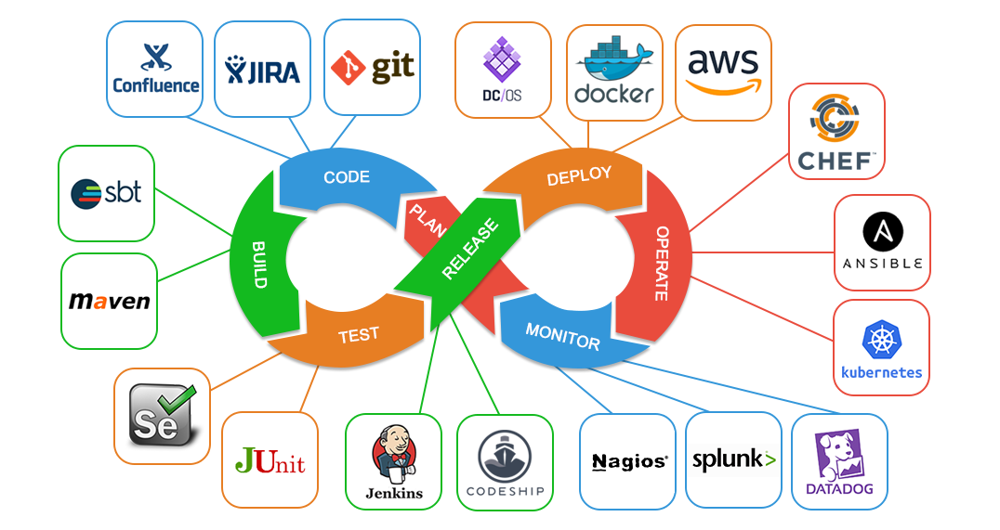
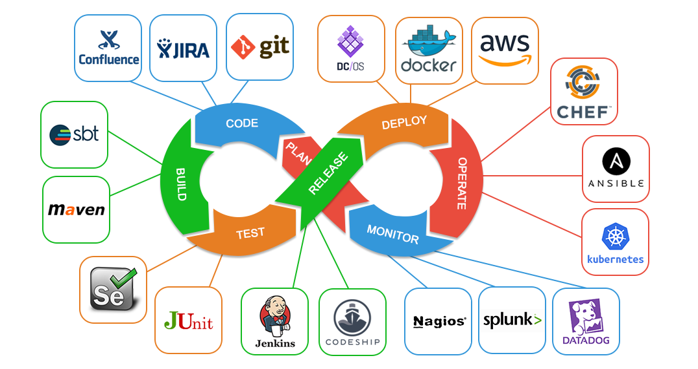
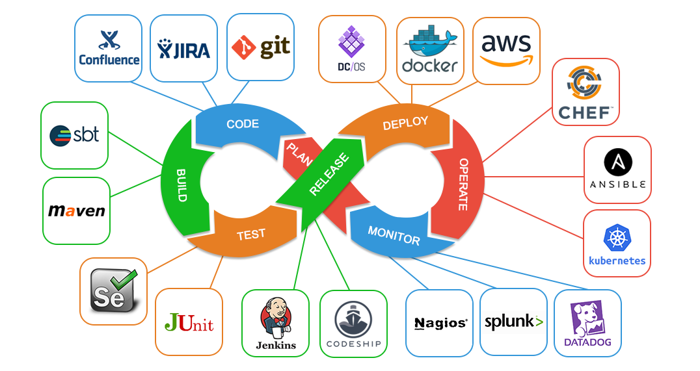

LifeCycle
 

This javascript function will capitalize the name.
Enter your name:
this is Line 1,
This is Line 2. This is Line 3
Is a set of practices that combines software development (Dev) and IT operations (Ops). It aims to shorten the systems development life cycle and provide continuous delivery with high software quality. DevOps is complementary with Agile software development several DevOps aspects came from the Agile methodology.

Toronto students will soon be able to walk along the Great Wall of China or snorkel in the Great Barrier Reef from their classrooms with the Google Expeditions virtual reality field trip experience.
Local teachers will be the first in Canada to have the opportunity to sign up for the Google Expeditions Pioneer Program in January. Schools that have six or more interested teachers will get one day to try out the virtual teaching tool.
“One of the key things we’ve heard from teachers is they really wanted to find a way to engage their students meaningfully and find that hook to inspire and get kids excited about learning,” said Jennifer Holland, program manager for education apps at Google.
The company will deliver kits containing smartphones, a tablet for the teacher, a router that allows the software to run without an Internet connection and either a View-Master or Google Cardboard.
Google’s cardboard viewing boxes, which start around $20 (U.S.), wrap around a smartphone that is held up to the face to create an immersive experience.
Google Expeditions integrates Cardboard with images from Google Earth and Street View, as well as 360 degree footage captured on its Jump cameras.
The tech giant is gathering feedback from students and teachers during this stage of the project before a planned release of an Expedition app that will be available on devices schools have already purchased later in the school year, said Jennifer Holland, program manager for education apps at Google.
The Expedition library currently includes more than 120 virtual trips to sites including Antarctica, the Acropolis, Chichen Itza, Mars and the Borneo rainforest.
IN OPEN SOURCING its artificial intelligence engine—freely sharing one of its most important creations with the rest of the Internet—Google showed how the world of computer software is changing.
These days, the big Internet giants frequently share the software sitting at the heart of their online operations. Open source accelerates the progress of technology. In open sourcing its TensorFlow AI engine, Google can feed all sorts of machine-learning research outside the company, and in many ways, this research will feed back into Google.
But Google’s AI engine also reflects how the world of computer hardware is changing. Inside Google, when tackling tasks like image recognition and speech recognition and language translation, TensorFlow depends on machines equipped with GPUs, or graphics processing units, chips that were originally designed to render graphics for games and the like, but have also proven adept at other tasks. And it depends on these chips more than the larger tech universe realizes.
According to Google engineer Jeff Dean, who helps oversee the company’s AI work, Google uses GPUs not only in training its artificial intelligence services, but also in running these services—in delivering them to the smartphones held in the hands of consumers.
AI is playing an increasingly important role in the world's online services---and alternative chips are playing an increasingly important role in that AI.
That represents a significant shift. Today, inside its massive computer data centers, Facebook uses GPUs to train its face recognition services, but when delivering these services to Facebookers—actually identifying faces on its social networks—it uses traditional computer processors, or CPUs. And this basic setup is the industry norm, as Facebook CTO Mike “Schrep” Schroepfer recently pointed out during a briefing with reporters at the company’s Menlo Park, California headquarters. But as Google seeks an ever greater level of efficiency, there are cases where the company both trains and executes its AI models on GPUs inside the data center. And it’s not the only one moving in this direction. Chinese search giant Baidu is building a new AI system that works in much the same way. “This is quite a big paradigm change,” says Baidu chief scientist Andrew Ng.
The change is good news for nVidia, the chip giant that specialized in GPUs. And it points to a gaping hole in the products offered by Intel, the world’s largest chip maker. Intel doesn’t build GPUs. Some Internet companies and researchers, however, are now exploring FPGAs, or field-programmable gate arrays, as a replacement for GPUs in the AI arena, and Intel recently acquired a company that specializes in these programmable chips.
The bottom line is that AI is playing an increasingly important role in the world’s online services—and alternative chip architectures are playing an increasingly important role in AI. Today, this is true inside the computer data centers that drive our online services, and in the years to come, the same phenomenon may trickle down to the mobile devices where we actually use these services.
Deep Learning in Action
At places like Google, Facebook, Microsoft, and Baidu, GPUs have proven remarkably important to so-called “deep learning” because they can process lots of little bits of data in parallel. Deep learning relies on neural networks—systems that approximate the web of neurons in the human brain—and these networks are designed to analyze massive amounts of data at speed. In order to teach these networks how to recognize a cat, for instance, you feed them countless photos of cats. GPUs are good at this kind of thing. Plus, they don’t consume as much power as CPUs.
But, typically, when these companies put deep learning into action—when they offer a smartphone app that recognizes cats, say—this app is driven by a data center system that runs on CPUs. According to Bryan Catanzaro, who oversees high-performance computing systems in the AI group at Baidu, that’s because GPUs are only efficient if you’re constantly feeding them data, and the data center server software that typically drives smartphone apps doesn’t feed data to chips in this way. Typically, as requests arrive from smartphone apps, servers deal with them one at a time. As Catanzaro explains, if you use GPUs to separately process each request as it comes into the data center, “it’s hard to get enough work into the GPU to keep it running efficiently. The GPU never really gets going.”
That said, if you can consistently feed data into your GPUs during this execution stage, they can provide even greater efficiency than CPUs. Baidu is working towards this with its new AI platform. Basically, as requests stream into the data center, it packages multiple requests into a larger whole that can then be fed into the GPU. “We assemble these requests so that, instead of asking the processor to do one request at a time, we have it do multiple requests at a time,” Catanzaro says. “This basically keeps the GPU busier.”
It’s unclear how Google approaches this issue. But the company says there are already cases where TensorFlow runs on GPUs during the execution stage. “We sometimes use GPUs for both training and recognition, depending on the problem,” confirms company spokesperson Jason Freidenfelds.
That may seem like a small thing. But it’s actually a big deal. The systems that drive these AI applications span tens, hundreds, even thousands of machines. And these systems are playing an increasingly large role in our everyday lives. Google now uses deep learning not only to identify photos, recognize spoken words, and translate from one language to another, but also to boost search results. And other companies are pushing the same technology into ad targeting, computer security, and even applications that understand natural language. In other words, companies like Google and Baidu are gonna need an awful lot of GPUs.
AI Everywhere
At the same time, TensorFlow is also pushing some of this AI out of the data center entirely and onto the smartphones themselves.
Typically, when you use a deep learning app on your phone, it can’t run without sending information back to the data center. All the AI happens there. When you bark a command into your Android phone, for instance, it must send your command to a Google data center, where it can processed on one of those enormous networks of CPUs or GPUs.
But Google has also honed its AI engine so that it, in some cases, it can execute on the phone itself. “You can take a model description and run it on a mobile phone,” Dean says, “and you don’t have to make any real changes to the model description or any of the code.”
This is how the company built its Google Translate app. Google trains the app to recognize words and translate them into another language inside its data centers, but once it’s trained, the app can run on its own—without an Internet connection. You can point your phone a French road sign, and it will instantly translate it into English.
That’s hard to do. After all, a phone offers limited amounts of processing power. But as time goes on, more and more of these tasks will move onto the phone itself. Deep learning software will improve, and mobile hardware will improve as well. “The future of deep learning is on small, mobile, edge devices,” says Chris Nicholson, the founder of a deep learning startup called Skymind.
GPUs, for instance, are already starting to find their way onto phones, and hardware makers are always pushing to improve the speed and efficiency of CPUs. Meanwhile, IBM is building a “neuromorphic” chip that’s designed specifically for AI tasks, and according to those who have used it, it’s well suited to mobile devices.
Today, Google’s AI engine runs on server CPUs and GPUs as well as chips commonly found in smartphones. But according to Google engineer Rajat Monga, the company built TensorFlow in a way that engineers can readily port it to other hardware platforms. Now that the tool is open source, outsiders can begin to do so, too. As Dean describes TensorFlow: “It should be portable to a wide variety of extra hardware.”
So, yes, the world of hardware is changing—almost as quickly as the world of software.